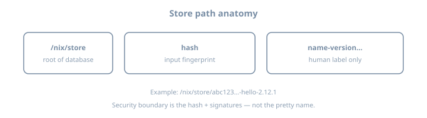
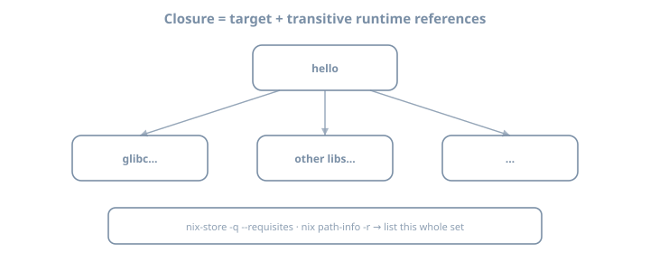
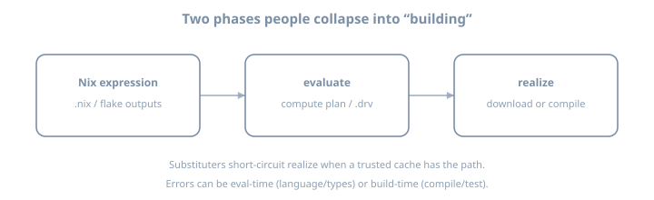
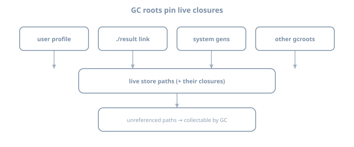

The Nix store and closures
The Nix store and closures
Goal: Read /nix/store paths as a graph database of software, define closures precisely, and explain GC roots—with labs that only observe (no aggressive GC yet).
Why this chapter matters
Every advanced Nix topic—binary caches, deploy, Docker-from-Nix, NixOS activations—is a story about store paths and references. Without that theory, later tools feel like superstition.
Ops motivation: disk fills, deploys miss a library, “I deleted the project but used 40 GB”—all are root/closure mistakes. If you can see the graph, you can operate it.
Theory 1 — The store is the database
The directory /nix/store is not a random cache folder. It is the authoritative object store for:
- Package outputs
- Derivation files (
.drv)
- Fixed-output download results
- Sometimes source mirrors
Invariants (practical)
| Invariant | Meaning |
|---|---|
| Paths are immutable | You do not vim a store path to “fix prod” |
| Names include hashes | Collision-resistant identity |
| References are explicit | Runtime deps encoded as string refs inside outputs |
| Mutation is via new paths | “Upgrade” means new hash, not overwrite |
Hand-editing the store voids the model (and often permissions prevent it).
What lives beside the store
| Path (typical) | Role |
|---|---|
/nix/var/nix/db |
Nix database (references, validity) |
/nix/var/nix/profiles |
Profile generations (roots) |
/nix/var/nix/gcroots |
Explicit GC roots |
/nix/var/nix/daemon-socket |
Multi-user daemon |
You rarely edit these by hand; you query them.
Theory 2 — Path anatomy

/nix/store/<hash>-<name>-<version>
│ │ │
│ │ └─ convenience label (not trust)
│ └─ cryptographic fingerprint of inputs (typical case)
└─ global namespace of this Nix installationExamples (illustrative shapes)
/nix/store/abc…-hello-2.12.1
/nix/store/def…-glibc-2.40-36
/nix/store/ghi…-bash-5.2-p37Theory punchline: two paths with the same pretty name and different hashes are different objects. Tools that only show names are lying by omission.
Input-addressed vs content-addressed (awareness)
| Model | Hash depends on | Note |
|---|---|---|
| Input-addressed (classic default) | Build inputs / derivation | Rebuild if inputs change |
| Content-addressed (experimental/advanced) | Output content | Same bytes → same hash potential |
You will live mostly in input-addressed land until the Internals part.
Name segment is not a version pin
The -2.12.1 label is human hinting. Trust the hash. Two hello-2.12.1 builds from different nixpkgs revisions are different paths.
Theory 3 — References and the closure

Direct references
A store path’s references are other store paths it mentions (dynamic linker paths, wrapped scripts, metadata). Query:
nix-store -q --references "$P"Closure (requisites)
The closure of a path P is the smallest set S such that:
- P is in S
- If x is in S and x references y, then y is in S
Operationally:
nix-store -q --requisites "$P"
nix path-info -r "$P"Why closures matter — worked scenarios
| Scenario | Why closure is the unit |
|---|---|
| Copy software to another host | Need all runtime deps |
| Binary cache upload | Serve complete graphs |
| Disk usage of “hello” | Sum of requisites, not one path |
| Container image from Nix | Pack a closure |
| NixOS system activation | Whole system is a giant closure |
Example narrative
hello
├─ glibc
│ ├─ …
├─ (other runtime inputs)hello is a thin node; glibc often dominates size. That is normal.
Closure size theory
nix path-info -S "$P" # approx size of one path
nix path-info -rS "$P" # recursive / closure-oriented sizingCompare single vs recursive. The gap is the theory lesson.
Referrers (reverse edges)
nix-store -q --referrers "$P"Useful when asking: “who still holds this library?”
Theory 4 — Evaluation vs realization (store-centric)
Recall the Why Nix exists chapter:

| Artifact | Typical location / form |
|---|---|
| Expression | .nix / flake |
| Derivation | .drv in store (build plan) |
| Output path | realized directory in store |
Example commands
# realize outputs (modern)
nix build nixpkgs#hello --print-out-paths
# classic query tools still educational
nix-store -q --tree "$HELLO" | headYou can evaluate without realizing in some workflows; beginners usually realize first because they want a runnable binary.
Theory 5 — Profiles, generations, and roots

Why GC exists
Every experiment can add paths. Without collection, disks fill. Collection must not delete paths still needed.
Root types (non-exhaustive)
| Root kind | Example |
|---|---|
| User profile generations | ~/.nix-profile, state profiles |
| Result symlinks | ./result from nix build |
| NixOS system profiles | /nix/var/nix/profiles/system* (host part) |
| Indirect roots under gcroots | Registered links |
| Running processes | Open files can keep paths live temporarily |
The ./result trap (critical theory)
nix build nixpkgs#hello
# creates ./result -> /nix/store/…-hello-…That symlink is a GC root. Leave hundreds of result links in temp dirs → permanent pins → “mystery” disk use.
Discipline: rm result when finished experimenting, or use --no-link.
Generations theory (preview)
Profiles are versioned. Rolling back a profile generation re-points the user environment. Deleting old generations makes previously live closures collectable if nothing else roots them.
Do not run nix-collect-garbage -d on a machine you care about until you understand generations. Observation only in this chapter.
Theory 6 — Substituters, signatures, trust (preview)
When realizing path P:
- Ask configured substituters (e.g.
cache.nixos.org)
- Verify signatures against trusted keys
- Else build locally
Trust model punchline: a random HTTP server offering store paths is not enough; signatures matter. Self-hosted caches (later packaging/ops chapters) require key management.
nix config show | grep -i substituter || true
nix path-info --json nixpkgs#hello 2>/dev/null | head -c 400Theory 7 — What “uninstall” means
| Action | Effect |
|---|---|
| Remove package from profile | Drop root edge; paths may remain |
| Delete project directory | Does not delete store |
rm result |
Drop one root |
| GC | Delete unreferenced paths |
Example misconception
"I deleted ~/code/foo, so Nix freed 2GB"
→ False unless GC ran and nothing else rooted those pathsOperational uninstall checklist
- Remove declarative/profile references
- Remove
resultand other roots
- Optionally drop old generations
- Run GC deliberately
Theory 8 — Copying closures (ops preview)
# conceptual modern/classic tools
nix copy --to ssh://host "$P"
# or nix-copy-closure in classic literacyDeploy systems (later parts) are sophisticated closure movers. The unit of transfer is still the closure.
Worked examples bank
Example A — Build and print path
HELLO=$(nix build nixpkgs#hello --print-out-paths --no-link)
echo "$HELLO"
"$HELLO/bin/hello"Example B — Direct vs full graph
nix-store -q --references "$HELLO"
nix-store -q --requisites "$HELLO" | wc -lExpect requisites count ≫ references count.
Example C — Tree view
nix-store -q --tree "$HELLO" | head -60Example D — Result root lifecycle
cd /tmp
rm -f result
nix build nixpkgs#hello
readlink result
# inspect roots (command variants exist)
nix-store --gc --print-roots 2>/dev/null | grep -i result || true
rm resultExample E — Path info metadata
nix path-info -sh "$HELLO"
nix path-info -rS "$HELLO" | tailExample F — Compare two packages
H=$(nix build nixpkgs#hello --print-out-paths --no-link)
G=$(nix build nixpkgs#git --print-out-paths --no-link)
echo "hello reqs: $(nix-store -q --requisites "$H" | wc -l)"
echo "git reqs: $(nix-store -q --requisites "$G" | wc -l)"Lab 1 — Realize hello and dissect the path
mkdir -p ~/lab/nixos-book/concepts/store
cd ~/lab/nixos-book/concepts/store
HELLO=$(nix build nixpkgs#hello --print-out-paths --no-link)
echo "$HELLO"
ls -la "$HELLO"
ls -la "$HELLO/bin"Journal: full path, name segment, hash length (approx).
Lab 2 — Closure measurements
echo "direct refs: $(nix-store -q --references "$HELLO" | wc -l)"
echo "requisites: $(nix-store -q --requisites "$HELLO" | wc -l)"
nix path-info -S "$HELLO"
nix path-info -rS "$HELLO" | tail -5Write one sentence: What dominates the closure?
Lab 3 — Follow one dependency
nix-store -q --references "$HELLO"
# pick a non-hello path, ls itObserve: another complete package prefix, not a classic /usr layout.
Lab 4 — Roots observation
ls -la /nix/var/nix/gcroots 2>/dev/null | head
ls -la ~/.nix-profile 2>/dev/null
nix profile list 2>/dev/null || truePerform Example D (result create/remove). Note difference.
Lab 5 — Teach-back
Without notes, define:
- Store path
- Reference
- Closure
- GC root
- Why
rm -rf project≠ free disk
Exercises
- Parse five real store paths into hash + name; ignore the pretty version for trust decisions.
- Compute requisites count for
helloand one larger package (gitorpython3).
- Find the single largest path in
hello’s closure viapath-info.
- Create three
resultlinks in different temp dirs; list them via print-roots; clean up.
- Explain why binary cache upload granularity is closure-shaped.
- Diagram references vs referrers for a tiny graph (3 nodes).
- Measure disk before/after realizing a package without GC (observe growth).
- Document every GC root kind you can observe on your machine.
- Use
nix-store -q --treeand annotate three levels of the tree.
- Write a one-page “store operator card” for future-you.
- Compare
--no-linkvs defaultresultworkflow for lab hygiene.
- Predict whether deleting
~/.cachefrees store space (then verify: it does not).
Common pitfalls
| Symptom | Theory |
|---|---|
| Disk full after demos | Roots + caches + no GC |
result broken link |
GC collected after root removed |
| “Uninstalled but still huge” | Roots remain; GC not run |
| Different hash on friend machine | Different nixpkgs revision |
| Permission denied writing store | Correct — immutability |
| Trusting package name only | Hash is identity |
Blind nix-collect-garbage -d |
Drops generations/roots you may need |
Thinking /nix/store is a cache you can wipe casually |
It is the object database |
Checkpoint
- Parse a store path into hash + name
- Define closure as a transitive reference set
- Show requisites count for
hello
- Explain
./resultas a GC root
- List ≥2 root kinds
- Agree not to blind
-dGC yet
- Single-path vs closure size surprise written down
Journal prompts
- Closure vs single-path size surprise
- Where you will accidentally create roots
- One deploy implication of closures
Further depth (this book)
| Topic | Chapter / part |
|---|---|
| Derivations producing paths | Derivations as an idea |
Modern queries (path-info) |
Modern Nix CLI |
| System generations as roots | Host: Rebuild and generations |
| GC hygiene in ops | Part Ops and fleet |
| Store daemon internals | Part Internals |